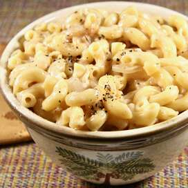

French Onion Mac and Cheese

Description
An upscale mac and cheese! Don't skimp on the cheese! It makes the mac and cheese taste amazing!
Ingredients
- 4 tablespoons unsalted butter, divided
- 2 large onions, very thinly sliced
- 1 teaspoon dried thyme
- 1 bay leaf
- 1 pinch salt and ground black pepper to taste
- 1 (16 ounce) package elbow macaroni
- 2 tablespoons all-purpose flour
- 1 cup beef broth
- 1 cup milk
- 1 pinch freshly grated nutmeg, or to taste
- ¾ pound shredded Gruyere cheese